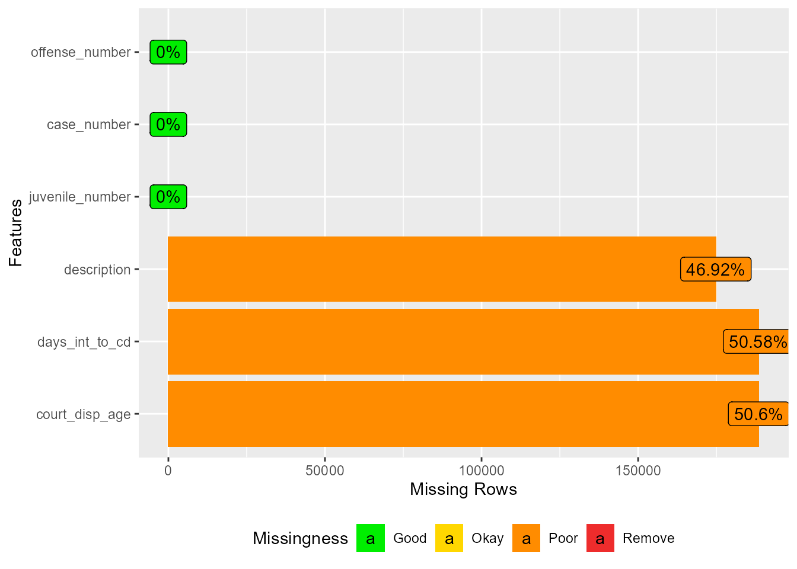
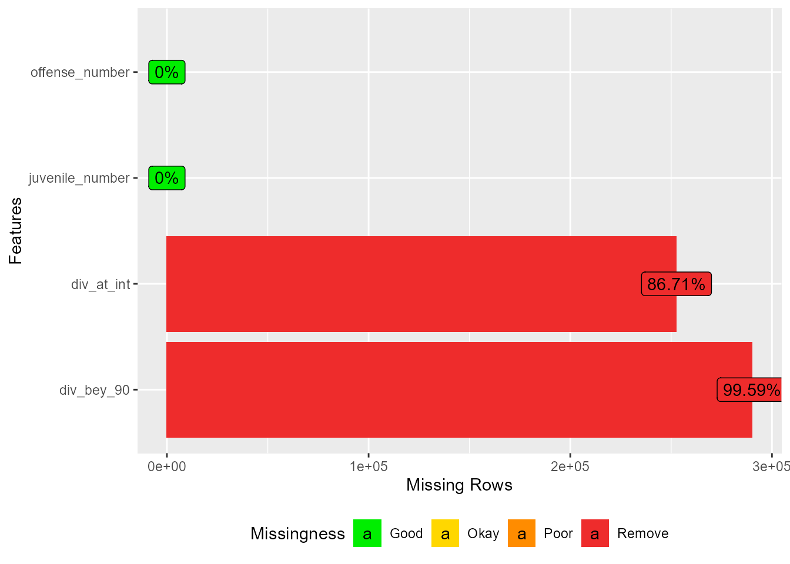

| Measure | Count |
|---|---|
| rows | 276,930 |
| columns | 33 |
| discrete_columns | 19 |
| continuous_columns | 14 |
| all_missing_columns | 0 |
| total_missing_values | 2,046,164 |
| complete_rows | 1,051 |
| total_observations | 9,138,690 |
| memory_usage | 73,321,440 |
Virginia DJJ Data File Codebooks
Data Sample:
Juvenile intake complaints with intake dates from July 1, 2015 - June 30, 2021
Dispositions – all dispositions for the intake complaints in the sample.
Caseload – all intake complaints in the sample that are associated with a workload status for diversion - “Diversion At Intake” or “Diversion Program Beyond 90 Days”
For all missing data plots, here are the % missingness categories: “Good” <= 5% missing, “OK” <= 40% missing, “Bad” <= 80% missing, and “Remove” = 100% missing
This syntax pulls in all data files provided by DJJ stored as a series of Excel file tabs – creates high-level codebooks for each using the DataExplorer package (https://boxuancui.github.io/DataExplorer/index.html). File names reflect the names provided by Dallas County.
Intake Complaints File
DJJ Description: Juvenile intake complaints with intake dates from July 1, 2015 - June 30, 2021
Intake Complaints, Data Overview
Intake Complaints, Fields Included
| Variable | Description |
|---|---|
| juvenile_number | A unique identification number that is automatically assigned at the time an electronic juvenile record is created in the electronic data management system. |
| case_number | A unique identification number that is assigned to an intake case upon the creation of the intake. |
| offense_number | A unique identification number that is automatically generated at the time an offense is entered in the electronic data management system. |
| csu | The court service unit that opened the intake case. |
| fips_code | The FIPS that opened the intake case. |
| date_opened | Month and year of intake |
| intake_age | Age at intake |
| pet_age | Age at petition |
| sex | The youth's sex assigned at birth. |
| race | The youth's race. |
| hispanic | The youth's ethnicity. |
| petitioner_type | The type of individual who requested the petition for the case. In February 2015, petitioner type was expanded to include “School Resource Officer” (SRO) in addition to “School Official.” Previously, it was unclear if an SRO’s intake was marked as “School Official,” “Police Department,” or other. |
| petitioner_desc | NA |
| intake_decision | The decision made by the intake officer |
| prior_misd | Prior number of misdemeanor complaints (any type of misdemeanor prior to intake date) |
| prior_felony | Prior number of felony complaints (prior to intake date) |
| prior_chinsup | Prior number of CHINSup complaints (prior to intake date) |
| prior_chins | Prior number of CHINS complaints (prior to intake date) |
| prior_other_status | Prior number of Status complaints (prior to intake date) |
| prior_other | Prior number of other complaints (prior to the intake date) |
| prior_adj | Prior number of adjudicated complaints (FG, G, GA) (prior to intake date) |
| drg | Offense category |
| description | The offense description of the offense. |
| vcc_code | The Virginia Crime Code of the offense. |
| dai | Offense severity of the offense according to the Detention Assessment Instrument (DAI) ranking |
| flg_category | Indicates if the complaint is a technical, status, delinquent, or traffic offense |
| mso_flag | Indicates if the complaint was the most serious offense of the intake case. There may be more than one most serious offense if the severity ranking was tied. |
| prob_yn | Indicates whether the juvenile received probation for the complaint |
| comm_yn | Indicates whether the juvenile was committed to DJJ for the complaint |
| risk_level | The risk level of the youth closest to the intake date based on the Youth Assessment and Screening Instrument (YASI) |
| ysai_date | Indicates if the YASI was done before, on, or after the intake date |
| assessmenttype | Indicates if the YASI is an initial assessment, reassessment, or done at case closure |
| mentalhealthflag | Mental health flag from the YASI |
Intake Complaints, Missing Data

Disposition File
DJJ Description: All dispositions for the intake complaints in the sample
Disposition, Data Overview
| Measure | Count |
|---|---|
| rows | 372,637 |
| columns | 6 |
| discrete_columns | 1 |
| continuous_columns | 5 |
| all_missing_columns | 0 |
| total_missing_values | 551,839 |
| complete_rows | 184,098 |
| total_observations | 2,235,822 |
| memory_usage | 17,891,976 |
Disposition, Fields Included
| Variable | Description |
|---|---|
| juvenile_number | A unique identification number that is automatically assigned at the time an electronic juvenile record is created in the electronic data management system. |
| case_number | A unique identification number that is assigned to an intake case upon the creation of the intake. |
| offense_number | A unique identification number that is automatically generated at the time an offense is entered in the electronic data management system. |
| court_disp_age | Age at court ordered disposition. |
| description | Court ordered disposition |
| days_int_to_cd | Days from intake date to court ordered disposition date |
Disposition, Missing Data

Caseload File
DJJ Description: All intake complaints in the sample that are associated with a workload status for diversion - “Diversion At Intake” or “Diversion Program Beyond 90 Days”
Caseload, Data Overview
| Measure | Count |
|---|---|
| rows | 291,379 |
| columns | 4 |
| discrete_columns | 1 |
| continuous_columns | 3 |
| all_missing_columns | 0 |
| total_missing_values | 542,838 |
| complete_rows | 0 |
| total_observations | 1,165,516 |
| memory_usage | 8,160,384 |
Caseload, Fields Included
| Variable | Description |
|---|---|
| juvenile_number | A unique identification number that is automatically assigned at the time an electronic juvenile record is created in the electronic data management system. |
| offense_number | A unique identification number that is automatically generated at the time an offense is entered in the electronic data management system. |
| div_at_int | Number of days on the workload status "Diversion at Intake" |
| div_bey_90 | Number of days on the workload status "Diversion Beyond 90 Days" |
Caseload, Missing Data
